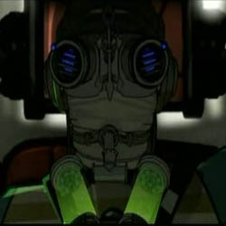

| Home | The Doctors | The Companions | The Villians |
|
|||
|
Baltazar Baltazar, Scourge of the Galaxy, serves as the main antagonist of the animated serial The Infinite Quest. Using enhanced rust, the Doctor destroys the ship Baltazar had built, Baltazar having destroyed the entire Earth defence. With his space piracy, cybernetics, robot parrot, and desire to crush planets into precious gems, Baltazar bears a striking resemblance to The Captain, a character from the Fourth Doctor adventure, The Pirate Planet. Baltazar destroyed a planet in the 40th century, and committed other crimes, and is sent to the prison planet Volag-Noc. With the aid of Caw, a robotic parrot, Balthazar puts a tracking device on the Doctor so the Doctor and Martha would find The Infinite – a huge spaceship that can grant people their heart's desire – for him. Once he finds The Infinite Baltazar discovers an illusion showing "what the heart desires". After the Doctor uses his sonic screwdriver to tear the ship apart, he orders Squawk to escort him backto Volag-Noc. |